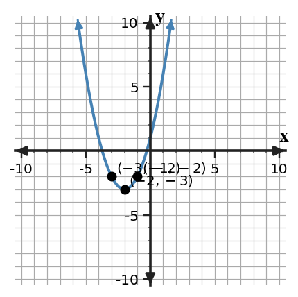

Translations
Mathematical idea: A translation changes location without changing the basic shape of a graph.
Students will track how parent-function key points move. They will connect horizontal and vertical shifts to equations, graphs, and tables.
Learning Target
Learning Target: Students will graph and write translated functions using key points and key features.
I can statements
- I can build translated graphs by moving key points and key features from a parent function.
- I can use horizontal and vertical shifts to write equations for translated functions.
- I can predict how changing values in an equation moves a graph left, right, up, or down.
What's To Come
This is a long-range preview for future lessons. Do not solve it today. Instead, annotate it individually. Circle anything familiar, underline symbols or directions that seem important, and write notes about what information you think will be needed later.
As you annotate, ask yourself: What parts (words, symbols, graphs) do you KNOW? What parts look FAMILIAR? What parts look like jibberish?
Create a translated absolute value function that has vertex $(3, -2)$ and passes through a point with output $5$. Include the equation, two supporting points, and a short context where the vertex has meaning.
Intro
Directions
Read the introduction aloud with a partner or in a small group. As you read, annotate the text by highlighting important ideas, circling key vocabulary, and writing short notes about connections, questions, or predictions in the margins.
Translations move a graph without stretching, flipping, or changing its shape. A vertical shift adds or subtracts the same amount from every output, so every point moves up or down together. The parent function keeps the same basic features.
A horizontal shift moves the input locations of key features. For example, a vertex that starts at $(0,0)$ can move to the right or left while the V-shape or parabola stays the same. Key points are helpful because you can move a few points instead of redrawing the whole graph from scratch.
The sign inside the parentheses can feel backward. In an expression like $(x-4)$, the output acts like the parent function reaches the same value when the input is 4 larger than before. That is why $x-4$ moves a graph right rather than left.
Translations appear in equations, graphs, and tables. A table can show each original point and its new translated point, while a graph shows the shifted vertex, intercepts, or other key features.
In a model, a translation can represent a changed starting value, a delayed event, or a new benchmark. The math goal is to connect the movement in the story to the movement in the equation and graph.
Stop and Discuss
- What does a vertical shift do to every output?
- How does a horizontal shift affect key points on a graph?
- Why is the sign inside parentheses easy to misread?
A translation moves every key point by the same horizontal or vertical amount.

| Parent point on $y=|x|$ | Rule | Translated point on $g(x)=|x-3|+2$ |
|---|---|---|
| $(0,0)$ | right 3, up 2 | $(3,2)$ |
| $(-1,1)$ | right 3, up 2 | $(2,3)$ |
| $(1,1)$ | right 3, up 2 | $(4,3)$ |
In context, the vertex $(3,2)$ could mean the lowest value happens at input 3 and the output is 2.
Example 1: Describe a Vertical Translation
For $g(x)=f(x)-3$, describe the translation from $f$ to $g$.
You Try It 1: Describe a Shift from an Equation
For $h(x)=f(x+4)$, describe the translation from $f$ to $h$.
Stop and Discuss
- How are vertical and horizontal shifts different in the equation?
Example 2: Graph a Translated Absolute Value Function
Use the blank coordinate plane to graph $g(x)=|x+3|-2$. Mark the translated vertex and two symmetric points.

You Try It 2: Graph Another Translated V-Shape
Graph $g(x)=|x-4|-1$. Mark the translated vertex and two symmetric points.
Stop and Discuss
- Why are the two marked side points useful after the vertex is translated?
For a quadratic parent function, the vertex and matching points move together.

The equation $h(x)=(x+2)^2-3$ moves $y=x^2$ left 2 and down 3.
| Parent point | Translated point |
|---|---|
| $(0,0)$ | $(-2,-3)$ |
| $(1,1)$ | $(-1,-2)$ |
| $(-1,1)$ | $(-3,-2)$ |
The vertex tells where the parabola turns after the translation.
Example 3: Graph a Translated Quadratic Function
Use the blank coordinate plane to graph $h(x)=(x-2)^2+1$. Mark the translated vertex and at least two matching points.
You Try It 3: Graph Another Translated Parabola
Graph $h(x)=(x+3)^2-2$. Mark the translated vertex and at least two matching points.
Stop and Discuss
- How can matching points help you avoid drawing a lopsided parabola?
Example 4: Correct a Horizontal-Shift Misread
A classmate says $y=(x+5)^2-2$ moves $y=x^2$ right 5 and down 2 because the equation contains $x+5$. Explain the error and give the correct movement.
You Try It 4: Explain the Correct Direction
A student says $y=|x-6|+1$ moves left 6 and up 1. Explain the mistake and give the correct movement.
Stop and Discuss
- What phrase could help someone remember the direction of $x-h$?
Summary
Today you used key points and key features to translate functions. A translation moves the graph without changing its shape.
Outside changes like $f(x)+k$ move outputs up or down, while inside changes like $f(x-h)$ move key input locations left or right.
A common error is reading $x-h$ as left because of the minus sign instead of locating where the inside equals zero.
Strong understanding means you can move a vertex or other key point, sketch the new graph, and write an equation that matches the movement.
Common Mistakes
- Reading the inside sign literally. Why it is tempting: the symbol appears to point one direction. What to check instead: find the input that makes the inside match the parent key input.
- Moving only the vertex. Why it is tempting: the vertex is the most visible point. What to check instead: move several key points to preserve shape.
- Changing shape during a translation. Why it is tempting: redrawing from memory can distort the graph. What to check instead: check symmetric points or matching points.
- Mixing up input and output changes. Why it is tempting: both shifts use numbers in the equation. What to check instead: outside changes outputs; inside changes inputs.
- Ignoring context meaning. Why it is tempting: equations feel separate from stories. What to check instead: ask what the shifted key point means in the situation.
Optional Future Task Reflection
Look back at the future task. Do not solve it yet. Highlight one part that makes more sense now than it did at the beginning. Circle one part that still feels unfamiliar. Write one sentence about what representation you would look at first.
For $g(x)=f(x)+5$, describe the translation from $f$ to $g$.
Use the blank coordinate plane to graph $g(x)=|x-2|+3$. Mark the translated vertex and two symmetric points.
What is one idea about translations of functions you understand better now than at the start of class? Write at least one complete sentence.
What is one thing about translations of functions you still want to understand or practice? Be specific — name the idea, not just "everything."